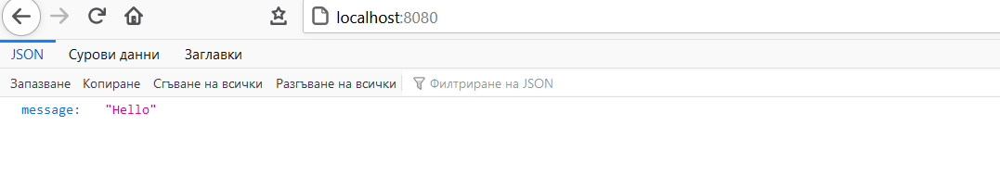

Express is a minimal and flexible Node.js web application framework that provides a robust set of features for web and mobile applications. To use express it you have to first create a package.json file with the format specified below. These dependencies are like the dependencies in the pom.xml file in Maven.
{
"dependencies": {
"express": "4.17.1"
}
}
After that create an app.js file and leave it blank. Open a terminal and navigate to the directory where the 2 files have been stored and run the command below. This will install all of the needed node modules.
npm installThen open your app.js file and enter the following code.
const express=require("express");
const app =express();
app.get("/", (req, res) => {
res.send({message:"Hello"});
});
app.listen(8080);
Open the directory where the files are in the console and run either node app.js or nodemon app.js if you have it installed. To see it running open your localhost on the port you have specified and you will see the message "hello". Most of the information should be returned in the form of JSON objects to this specifically concerning REST API's.
You can also send html elemetents, arrays, object, constants or even variables. To access these diffrent routes you just have to type /routeName ("/me" or "/welcome" in this case) after the port specification in the URL.